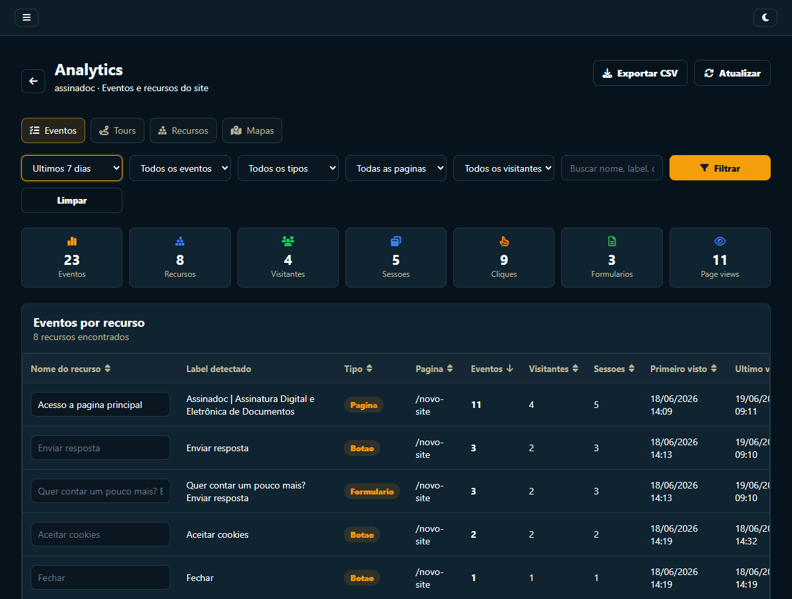

Quando buscar uma alternativa ao Pendo?
O Pendo é uma plataforma ampla, voltada também a operações enterprise. Os planos pagos trabalham com preço personalizado por volume de usuários ativos e recursos. Uma alternativa mais enxuta faz sentido quando a prioridade é colocar tours e jornadas no ar, medir o essencial e manter o custo previsível.
O núcleo de experiência de produto do BeeTour
| Objetivo | Como o BeeTour atende |
|---|---|
| Orientar novos usuários | Tours visuais com mídia, destaque e avanço por interação real |
| Conectar jornadas | Fluxos multipágina com condições e ramificações |
| Medir adoção | Eventos, recursos, visitantes, sessões, cliques e formulários |
| Encontrar fricção | Conclusão e abandono de tours mais mapas de clique, mouse e rolagem |
| Ouvir o cliente | NPS configurável, funil, distribuição e respostas identificadas |
| Agir por segmento | Condições por e-mail, tags, página e histórico de acesso |
Uma entrada muito mais competitiva
O Pendo oferece uma modalidade gratuita limitada e direciona os planos de escala para orçamento personalizado. O BeeTour foi desenhado para começar simples: plano grátis para validar o uso e uma operação focada no conjunto que mais importa para onboarding, adoção, mapas e NPS.
Analytics que aproxima dado e ação
O catálogo de recursos detecta elementos usados no site e permite trocar labels técnicos por nomes claros para o relatório. Os filtros por período, evento, tipo, página e visitante ajudam a investigar uma pergunta específica sem montar uma nova instrumentação.
Do comportamento para o onboarding
Quando um recurso importante aparece com pouco uso, você pode criar um tour para apresentá-lo. Quando uma etapa tem abandono alto, pode ajustar o conteúdo. Quando a experiência precisa seguir caminhos diferentes, transforma o tour em um fluxo condicional.
Da resposta para a próxima ação
No NPS, cada faixa pode receber mensagem e botão próprios. Um detrator pode ser direcionado ao suporte, enquanto um promotor pode seguir para avaliação, indicação ou contato comercial.

Compare com base em uma jornada concreta
Defina um caso de uso, como onboarding inicial, ativação de uma funcionalidade ou coleta de NPS. Avalie tempo de implantação, autonomia, qualidade dos dados e custo total da operação.